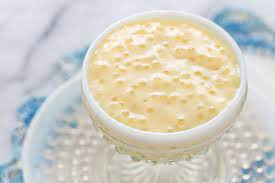

RECETAS
Tapioca | Quesadillas | Pez con nutella

Tapioca
Ingredientes
- 300 gr de tapioca
- 1 lata de leche condenasda
- 1 lata de leche evaporada
- 1 taza y media de leche normal
- 1 cucharada de vainilla
- 1 trozo de canela
- 1 taza de agua
Proceso
- Una hora antes de empezar a hacer la tapioca dejar hidratandola en agua
- Una ves hidratada el agua calentar una olla en fuego medio y meter 1 taza de agua y el trozo de canela
- Despues agregar las tapiocas y empezar a menearle en circulos hasta que se vean como mas infladas y con un color un poco mas cafe o amarillo
- Empezar a agregar las 3 leches no importa el orden y agregar una cucharada de vainilla
- Seguir meneando hasta que se sienta como gelatinoso y finalmente quitar el trozo de canela

Quesadillas
Ingredientes
Proceso
Poner queso en en la tortilla
poner el sarten en fuego medio y ya

Pez con nutella
Ingredientes
Proceso
- Poner nutella a el pez